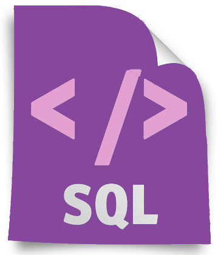

SQL as a programming language

SQL is a Structured Query Language used for interacting with a RDBMS.
* RDBMS (Relational Database Management Systems) - helps users create & maintain a relational database.
It is actually a hybrid language. It’s basically 4 types of languages in one.
- Data Query Language (DQL) : Used to query the database for information. Can get information that’s already stored in the database.
- Data Definition Language (DDL) : Used for defining database schemas.
- Data Control Language (DCL) : Used for controlling access to data in the database. Handles user & permissions management.
- Data Manipulation Language (DML) : Used for inserting, updating, and deleting data from the database.
In short, we can do the following things with SQL:
- Create, Read, Update, and Delete data
- Create & Manage databases
- Design & Create database tables
- Perform administrative tasks (security, user management, import/export, etc)
A Query is a set of instructions given to the RDMBS (written in SQL) that tell the RDMBS what information a developer wants it to retrieve for the developer.